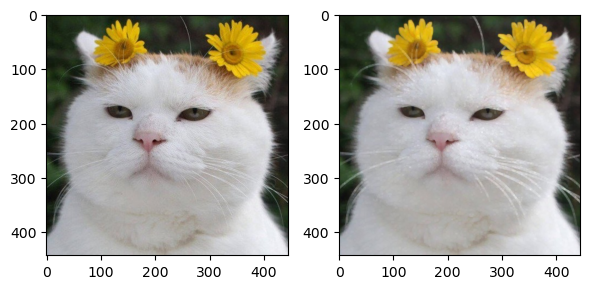
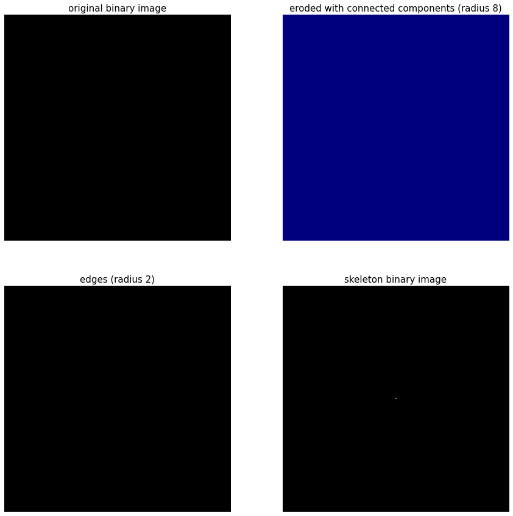

형태학적 변환#
형태학적 변환(morphological transformation)은 영상 분야에서 노이즈 제거, 구멍 메꾸기, 연결되지 않은 경계 이어붙이기 등 형태학적 관점에서 영상 연산을 뜻한다. 모폴로지는 주로 형태를 다루는 연산이므로 바이너리 이미지를 대상으로 하고 대표적인 연산은 침식과 팽창이다. 이 둘을 결합한 열림과 닫힘 연산이 있다.
침식 연산#
침식(erosion)은 원래 있던 객체의 영역을 깍아 내는 연산이다. 이 연산을 위해 구조화 요소(structuring element)라는 0과 1로 채워진 커널이 필요하며 1이 채어ㅜ진 모양에 따라 사각형, 타원형, 십자형 등을 사용할 수 있다. 침식 연산은 구조화 요소 커널을 입력 영상에 적용해서 1로 채워진 영역을 온전히 올려 놓을 수 없으며 해당 픽셀을 0으로 변경한다.
import cv2
import numpy as np
import matplotlib.pyplot as plt
import cv2
import numpy as np
import matplotlib.pyplot as plt
img = cv2.imread('./img/cat-01.jpg')
img = img[..., ::-1]
kernel = cv2.getStructuringElement(cv2.MORPH_RECT, (3, 3))
erosion = cv2.erode(img, kernel)
fig, (ax1, ax2) = plt.subplots(ncols=2, dpi=100)
ax1.imshow(img)
ax2.imshow(erosion)
fig.tight_layout()
plt.show()
---------------------------------------------------------------------------
ModuleNotFoundError Traceback (most recent call last)
Cell In[1], line 1
----> 1 import cv2
2 import numpy as np
3 import matplotlib.pyplot as plt
ModuleNotFoundError: No module named 'cv2'
팽창 연산#
팽창(dilatation)은 침식과 반대로 영상 속 사물의 주변을 덧붙여서 영역을 확장하는 연산이다. 침식 연산과 마찬가지로 구조화 요소 커널을 입력 영상에 적용해 1로 채워진 영역이 온전히 덮이지 않으면 1로 채워넣는다.
import cv2
import numpy as np
import matplotlib.pyplot as plt
import cv2
import numpy as np
import matplotlib.pyplot as plt
img = cv2.imread('./img/cat-01.jpg')
img = img[..., ::-1]
kernel = cv2.getStructuringElement(cv2.MORPH_RECT, (3, 3))
dst = cv2.dilate(img, kernel)
fig, (ax1, ax2) = plt.subplots(ncols=2, dpi=100)
ax1.imshow(img)
ax2.imshow(dst)
fig.tight_layout()
plt.show()

from skimage.io import imread
from skimage.color import rgb2gray
from skimage.filters import threshold_otsu
from scipy.ndimage.morphology import binary_erosion, binary_dilation, binary_fill_holes, morphological_gradient, distance_transform_edt
import numpy as np
import matplotlib.pylab as plt
im = rgb2gray(imread('./img/cat-01.jpg'))
thres = threshold_otsu(im)
im = (im > thres).astype(np.uint8)
eroded = binary_erosion(im, structure=np.ones((2,2)), iterations=20)[20:,20:]
eroded = 1 - eroded
dilated = binary_dilation(eroded, structure=np.ones((11,11)))
edges = 1 - morphological_gradient(im, size=3) #dilated5.astype(np.int) - eroded5.astype(np.int)
boundary = np.clip(dilated.astype(np.int) - eroded.astype(np.int), 0, 1)
dt = distance_transform_edt(np.logical_not(boundary))
plt.figure(figsize=(20,25))
plt.gray()
plt.subplots_adjust(left=0, right=1, bottom=0, top=0.95, wspace=0.05, hspace=0.05)
plt.subplot(221), plt.imshow(im), plt.axis('off'), plt.title('thresholded original image (otsu)', size=20)
plt.subplot(222), plt.imshow(eroded), plt.axis('off'), plt.title('inverse eroded binary image (2x2 square)', size=20)
plt.subplot(223), plt.imshow(dt, cmap='jet'), plt.axis('off'), plt.title('Euclidean distance transform', size=20), plt.colorbar()
plt.subplot(224), plt.imshow(edges), plt.axis('off'), plt.title('Morphological edges (size 3)', size=20)
(<AxesSubplot:title={'center':'Morphological edges (size 3)'}>,
<matplotlib.image.AxesImage at 0x192cb3f1248>,
(-0.5, 443.5, 442.5, -0.5),
Text(0.5, 1.0, 'Morphological edges (size 3)'))
from skimage import morphology as morph
from skimage.io import imread
from skimage.color import rgb2gray
from skimage.filters import threshold_otsu
im = rgb2gray(imread('./img/cat-01.jpg'))
im = (im > 0).astype(np.uint8)
disk2 = morph.disk(radius=2)
disk8 = morph.disk(radius=8)
eroded2 = morph.binary_erosion(im, selem=disk2)
eroded8 = morph.binary_erosion(im, selem=disk8)
labeled = morph.label(eroded8, connectivity=1)
dilated2 = morph.binary_dilation(im, selem=disk2)
edges = dilated2.astype(np.int) - eroded2.astype(np.int)
skeleton = morph.skeletonize(im)
plt.figure(figsize=(15,15))
plt.subplot(221), plt.imshow(im), plt.axis('off'), plt.title('original binary image', size=15)
plt.subplot(222), plt.imshow(labeled, cmap='jet'), plt.axis('off'), plt.title('eroded with connected components (radius 8)', size=15)
plt.subplot(223), plt.imshow(edges), plt.axis('off'), plt.title('edges (radius 2)', size=15)
plt.subplot(224), plt.imshow(skeleton), plt.axis('off'), plt.title('skeleton binary image', size=15)
plt.show()

from skimage.morphology import rectangle
orig = imread('images/tetris.png')
im = rgb2gray(orig)
im = (im < 1).astype(np.uint8)
eroded = binary_erosion(im, square(21))
eroded2 = binary_erosion(im, rectangle(41,20))
plt.figure(figsize=(20,20))
plt.gray()
plt.subplots_adjust(left=0, right=1, bottom=0, top=0.95, wspace=0.05, hspace=0.05)
plt.subplot(141), plt.imshow(orig), plt.axis('off'), plt.title('original image', size=20)
plt.subplot(142), plt.imshow(im), plt.axis('off'), plt.title('thresholded image', size=20)
plt.subplot(143), plt.imshow(eroded), plt.axis('off'), plt.title('eroded (21x21 SE)', size=20)
plt.subplot(144), plt.imshow(eroded2), plt.axis('off'), plt.title('eroded (41x20 SE)', size=20)
plt.show()
from skimage.morphology import diamond
orig = imread('images/card.png')
im = rgb2gray(orig)
im = (im < 1).astype(np.uint8)
eroded = binary_erosion(im, diamond(21))
eroded2 = binary_erosion(im, diamond(41))
plt.figure(figsize=(20,20))
plt.gray()
plt.subplots_adjust(left=0, right=1, bottom=0, top=0.95, wspace=0.05, hspace=0.05)
plt.subplot(141), plt.imshow(orig), plt.axis('off'), plt.title('original image', size=20)
plt.subplot(142), plt.imshow(im), plt.axis('off'), plt.title('thresholded image', size=20)
plt.subplot(143), plt.imshow(eroded), plt.axis('off'), plt.title('eroded (21x21 SE)', size=20)
plt.subplot(144), plt.imshow(eroded2), plt.axis('off'), plt.title('eroded (41x20 SE)', size=20)
plt.show()
from skimage.morphology import disk, rectangle
im = rgb2gray(imread('images/points_with_lines.png'))
th = threshold_otsu(im)
im = (im >= th).astype(np.uint8)
eroded1 = binary_erosion(im, disk(5))
eroded2 = binary_erosion(im, rectangle(20, 1))
eroded3 = binary_erosion(im, rectangle(1, 20))
plt.figure(figsize=(20,17))
plt.gray()
plt.subplots_adjust(left=0, right=1, bottom=0, top=0.95, wspace=0.05, hspace=0.05)
plt.subplot(221), plt.imshow(im), plt.axis('off'), plt.title('binary image', size=20)
plt.subplot(222), plt.imshow(eroded1), plt.axis('off'), plt.title('points', size=20)
plt.subplot(223), plt.imshow(eroded2), plt.axis('off'), plt.title('vertical lines', size=20)
plt.subplot(224), plt.imshow(eroded3), plt.axis('off'), plt.title('horizontal lines', size=20)
plt.show()
from skimage.morphology import disk, square, black_tophat, white_tophat
im = rgb2gray(imread('images/mri.png'))
eroded1 = black_tophat(im, disk(20))
eroded2 = black_tophat(im, square(50))
eroded3 = white_tophat(im, square(50))
plt.figure(figsize=(15,17))
plt.gray()
plt.subplots_adjust(left=0, right=1, bottom=0, top=0.95, wspace=0.05, hspace=0.05)
plt.subplot(221), plt.imshow(im), plt.axis('off'), plt.title('MRI image', size=20)
plt.subplot(222), plt.imshow(eroded1), plt.axis('off'), plt.title('black top hat (small SE)', size=20)
plt.subplot(223), plt.imshow(eroded2), plt.axis('off'), plt.title('black top hat (large SE)', size=20)
plt.subplot(224), plt.imshow(eroded3), plt.axis('off'), plt.title('white top hat', size=20)
plt.show()
import cv2
import numpy as np
import matplotlib.pylab as plt
image = cv2.imread('images/circles.png', 0)
image = cv2.threshold(image, 100, 255, cv2.THRESH_BINARY)[1]
kernel = np.ones((11,11),np.uint8)
eroded1 = cv2.morphologyEx(image, cv2.MORPH_ERODE, kernel)
kernel = np.ones((21,21),np.uint8)
eroded = cv2.morphologyEx(image, cv2.MORPH_ERODE, kernel)
cnts, _ = cv2.findContours(eroded, cv2.RETR_EXTERNAL, cv2.CHAIN_APPROX_SIMPLE)
output = cv2.cvtColor(image.copy(), cv2.COLOR_GRAY2RGB)
count = 0
for c in cnts:
cv2.drawContours(output, [c], -1, (np.random.randint(0,255), np.random.randint(0,255), np.random.randint(0,255)), 2)
count += 1
text = "Found {} objects".format(count)
plt.figure(figsize=(15,16))
plt.gray()
plt.subplot(221), plt.imshow(image), plt.axis('off'), plt.title('Original binary image', size=20)
plt.subplot(222), plt.imshow(eroded1), plt.axis('off'), plt.title('Eroded (11x11 square)', size=20)
plt.subplot(223), plt.imshow(eroded), plt.axis('off'), plt.title('Eroded (21x21 square)', size=20)
plt.subplot(224), plt.imshow(output), plt.axis('off'), plt.title('Counting objects: ' + text, size=20)
plt.show()
import cv2
image = cv2.imread('images/rasagolla.png')
gray = cv2.cvtColor(image, cv2.COLOR_BGR2GRAY)
gray = cv2.bitwise_not(gray) #255 - gray
#gray = cv2.equalizeHist(gray)
edged = cv2.Canny(gray, 50, 150)
thresh = cv2.threshold(gray, 100, 255, cv2.THRESH_BINARY_INV)[1]
kernel = np.ones((4,4),np.uint8)
thresh = cv2.morphologyEx(thresh, cv2.MORPH_CLOSE, kernel) #Close
thresh = cv2.morphologyEx(thresh, cv2.MORPH_OPEN, kernel) #Open
#ret, thres = cv2.threshold(edged,0,255,cv2.THRESH_BINARY+cv2.THRESH_OTSU)
# find contours (i.e., outlines) of the foreground objects in the thresholded image
cnts, _ = cv2.findContours(thresh.copy(), cv2.RETR_EXTERNAL, cv2.CHAIN_APPROX_SIMPLE)
output = image.copy()
count = 0
# loop over the contours
for c in cnts:
# draw each contour on the output image with a 2px random color
# outline, then display the output contours one at a time
#print(cv2.contourArea(c))
if cv2.contourArea(c) > 5: # ignore small objects
cv2.drawContours(output, [c], -1, (np.random.randint(0,255), np.random.randint(0,255), np.random.randint(0,255)), 2)
count += 1
text = "Found {} objects".format(count)
plt.figure(figsize=(20,15))
plt.subplot(221), plt.imshow(cv2.cvtColor(image, cv2.COLOR_BGR2RGB)), plt.axis('off'), plt.title('Original image', size=20)
plt.subplot(222), plt.imshow(edged, cmap='gray'), plt.axis('off'), plt.title('Edges', size=20)
plt.subplot(223), plt.imshow(thresh, cmap='gray'), plt.axis('off'), plt.title('Binary image', size=20)
plt.subplot(224), plt.imshow(cv2.cvtColor(output, cv2.COLOR_BGR2RGB)), plt.axis('off'), plt.title('Counting objects: ' + text, size=20)
plt.show()
import mahotas as mh
import matplotlib.pylab as plt
import numpy as np
from skimage.morphology import flood_fill, diameter_closing
blackhole = mh.imread('images/blackhole.png')
blackhole_gray = mh.colors.rgb2grey(blackhole).astype(np.uint8)
t = 60 #mahotas.rc(blackhole_gray)
bin_blackhole = (blackhole_gray > t).astype(np.uint8)
cms = mh.center_of_mass(bin_blackhole)
print('Eccentricity =', mh.features.eccentricity(bin_blackhole))
# 0.5449847073316407
plt.figure(figsize=(12,8))
plt.gray()
plt.subplots_adjust(0,0,1,1,0.01,0.05)
plt.subplot(221), plt.imshow(blackhole), plt.axis('off'), plt.title('original black hole image', size=20)
#bin_blackhole = mahotas.border(bin_blackhole)
plt.subplot(222), plt.imshow(bin_blackhole), plt.axis('off'), plt.title('binary image (with center of mass)\nEuler Number={}'.format(mh.euler(bin_blackhole)), size=20)
plt.scatter(cms[1], cms[0], color='red', s=50)
bin_blackhole2 = flood_fill(bin_blackhole, (200,400), 1)
plt.subplot(223), plt.imshow(bin_blackhole2), plt.axis('off'), plt.title('binary image (after flood-fill)\nEuler Number={}'.format(mh.euler(bin_blackhole2)), size=20)
plt.subplot(224), plt.imshow(diameter_closing(bin_blackhole, 100, connectivity=2)), plt.axis('off'), plt.title('binary image (after diameter-closing)', size=20)
plt.show()
import mahotas as mh
import matplotlib.pylab as plt
import numpy as np
from skimage.morphology import diameter_opening
planets = mh.imread('images/planets.png')
planets_gray = mh.colors.rgb2grey(planets).astype(np.uint8)
t = 25 #mahotas.rc(planets_gray)
bin_planets = (planets_gray > t).astype(np.uint8)
cms = mh.center_of_mass(bin_planets)
#print(cms)
print('Euler number =', mh.euler(bin_planets))
print('Eccentricity =', mh.features.eccentricity(bin_planets))
plt.figure(figsize=(12,10))
plt.gray()
plt.subplots_adjust(0,0,1,1,0.01,0.05)
plt.subplot(221), plt.imshow(planets), plt.axis('off'), plt.title('original planets image', size=20)
#bin_blackhole = mahotas.border(bin_blackhole)
plt.subplot(222), plt.imshow(bin_planets), plt.axis('off'), plt.title('binary image (with center of mass)', size=20)
plt.scatter(cms[1], cms[0], color='red', s=50)
plt.subplot(223), plt.imshow(diameter_opening(bin_planets, 10, connectivity=2)), plt.axis('off'), plt.title('binary image (after diameter-opening)', size=20)
plt.subplot(224), plt.imshow(diameter_opening(bin_planets, 100, connectivity=2)), plt.axis('off'), plt.title('binary image (after diameter-opening)', size=20)
plt.show()
from skimage.io import imread
from skimage.color import rgb2gray
from skimage.filters import threshold_otsu
from skimage.morphology import reconstruction
from skimage.morphology import binary_erosion, rectangle
import matplotlib.pylab as plt
import numpy as np
img = rgb2gray(imread('images/tagore_manuscript.png'))
th = 0.6 #threshold_otsu(img)
img[img <= th] = 0
img[img > th] = 1
img = 1 - img
mask = img
seed = binary_erosion(img, rectangle(1,50))
words = reconstruction(seed, mask, 'dilation')
plt.figure(figsize=(15,20))
plt.subplots_adjust(0,0,1,1,0.05,0.05)
plt.subplot(221), plt.imshow(img), plt.axis('off'), plt.title('Tagore\'s drawing-ridden manuscript', size=20)
plt.subplot(222), plt.imshow(seed), plt.axis('off'), plt.title('Seed for the reconstruction', size=20)
plt.subplot(223), plt.imshow(words), plt.axis('off'), plt.title('Tagore\'s drawing', size=20)
plt.subplot(224), plt.imshow(img-words), plt.axis('off'), plt.title('Tagore\'s manuscript without drawing', size=20)
plt.show()
from skimage.io import imread
from skimage.color import rgb2gray
from skimage.filters import threshold_otsu
from skimage.morphology import reconstruction
from skimage.morphology import binary_erosion, rectangle, remove_small_objects, remove_small_holes
import matplotlib.pylab as plt
import numpy as np
img = rgb2gray(imread('images/keyboard.png'))
th = 0.18 #threshold_otsu(img)
img[img <= th] = 0
img[img > th] = 1
img = remove_small_holes(255*img.astype(np.uint8), 256)
mask = img
seed = binary_erosion(img, rectangle(30,1))
words = reconstruction(seed, mask, 'dilation')
plt.figure(figsize=(20,30))
plt.gray()
plt.subplots_adjust(0,0,1,1,0.05,0.05)
plt.subplot(411), plt.imshow(img), plt.axis('off'), plt.title('Keyboard', size=20)
plt.subplot(412), plt.imshow(seed), plt.axis('off'), plt.title('Seed for the reconstruction', size=20)
plt.subplot(413), plt.imshow(words), plt.axis('off'), plt.title('Keyboard without alphabets (with reconstruction)', size=20)
plt.subplot(414), plt.imshow(remove_small_objects((img-words).astype(np.uint8), 20)), plt.axis('off'), plt.title('Only alphabets', size=20)
plt.show()
import numpy as np
import matplotlib.pylab as plt
from skimage.io import imread
from skimage.color import rgb2gray, gray2rgb
from scipy import ndimage
def hit_or_miss_transform(im, s1, s2):
im = rgb2gray(imread(im))
m, n = im.shape
s1 = rgb2gray(imread(s1))
s2 = rgb2gray(imread(s2))
print(im.shape, s1.shape, s2.shape)
plt.gray()
plt.figure(figsize=(8,4))
plt.subplot(121), plt.imshow(s1), plt.axis('off'), plt.title('Structuring element 1', size=20)
plt.subplot(122), plt.imshow(s2), plt.axis('off'), plt.title('Structuring element 2', size=20)
plt.show()
hom_transformed = ndimage.binary_hit_or_miss(im, structure1=s1, structure2=s2).astype(np.int)
xs, ys = np.where(hom_transformed == 1)
hom_transformed = gray2rgb(hom_transformed)
w, h = 10, 12 #s1.shape
#print(w,h,m,n)
for i in range(len(xs)):
x, y = (xs[i], ys[i])
for j in range(max(0, x-h), min(m-1, x+h)):
for k in range(max(0, y-w), min(n, y+w)):
hom_transformed[j, k, 0] = 1.
for j in range(max(0, x-h), min(m, x+h)):
for k in range(max(0, y-w), min(n-1, y+w)):
hom_transformed[j, k, 0] = 1.
#np.max(hom_transformed)
plt.figure(figsize=(30,60))
#plt.imshow(hom_transformed.astype(np.float))
plt.subplot(121), plt.imshow(im), plt.axis('off'), plt.title('Original Image', size=25)
plt.subplot(122), plt.imshow(np.clip(gray2rgb(im) + hom_transformed.astype(np.float), 0, 1)), plt.axis('off'),
plt.title('Output with Hit-or-Miss Transform', size=25)
plt.show()
hit_or_miss_transform('images/poem.png', 'images/bo.png', 'images/bo_inv_1.png')
hit_or_miss_transform('images/poem.png', 'images/bo.png', 'images/bo_inv_2.png')
def hit_or_miss_transform2(im, s1, s2, ch):
m, n = im.shape
hom_transformed = ndimage.binary_hit_or_miss(im, structure1=s1, structure2=s2).astype(np.uint8)
xs, ys = np.where(hom_transformed == 1)
hom_transformed = gray2rgb(hom_transformed)
w, h = 18, 12 #s1.shape
for i in range(len(xs)):
x, y = (xs[i], ys[i])
for j in range(max(0, x-h), min(m-1, x+h)):
for k in range(max(0, y-w), min(n, y+w)):
hom_transformed[j, k, ch] = 1.
for j in range(max(0, x-h), min(m, x+h)):
for k in range(max(0, y-w), min(n-1, y+w)):
hom_transformed[j, k, ch] = 1.
return hom_transformed
im = rgb2gray(imread('images/triglyceride.png'))
s1 = rgb2gray(imread('images/tg_se1.png'))
s2 = rgb2gray(imread('images/tg_se2.png'))
s3 = rgb2gray(imread('images/tg_se3.png'))
pat1 = hit_or_miss_transform2(im, s1, s2, 0)
pat2 = hit_or_miss_transform2(im, s1, s3, 2)
plt.figure(figsize=(20,10))
plt.imshow(np.clip(gray2rgb(im) + pat1.astype(np.float) + pat2.astype(np.float), 0, 1)), plt.axis('off')
plt.title('Output with Hit-or-Miss Transform', size=25)
plt.show()
from scipy import ndimage as ndi
from skimage.morphology import watershed, disk, binary_dilation, remove_small_objects
from skimage.filters import rank, threshold_otsu
from skimage.feature import peak_local_max
from skimage.measure import regionprops
from skimage.util import img_as_ubyte
from skimage.io import imread
from skimage.color import rgb2gray
import numpy as np
import matplotlib.pyplot as plt
image = img_as_ubyte(rgb2gray(imread('images/circles.png'))) #img_as_ubyte(data.camera())
distance = ndi.distance_transform_edt(image)
local_maxi = peak_local_max(distance, indices=False, footprint=np.ones((3, 3)), labels=image)
markers = ndi.label(local_maxi)[0]
labels = watershed(-distance, markers, mask=image)
labels = remove_small_objects(labels, min_size=100)
props = regionprops(labels)
print(len(np.unique(labels)), len(props))
plt.gray()
plt.figure(figsize=(20,20))
plt.subplot(221), plt.imshow(image), plt.axis('off'), plt.title('Original', size=20)
plt.subplot(222), plt.imshow(distance), plt.axis('off'), plt.title('Distance', size=20)
plt.subplot(223), plt.imshow(binary_dilation(markers, disk(2))), plt.axis('off'), plt.title('Markers', size=20)
plt.subplot(224), plt.imshow(labels, cmap='jet'), plt.axis('off'), plt.title('Segmented', size=20)
plt.show()
image = img_as_ubyte(rgb2gray(imread('images/lotus.png')))
denoised = rank.median(image, disk(2))
# find continuous region (low gradient -
# where less than 10 for this image) --> markers
# disk(5) is used here to get a more smooth image
markers = rank.gradient(denoised, disk(5)) < 20
markers = ndi.label(markers)[0]
# local gradient (disk(2) is used to keep edges thin)
gradient = rank.gradient(denoised, disk(2))
labels = watershed(gradient, markers)
labels = remove_small_objects(labels, min_size=100)
props = regionprops(labels)
print(len(np.unique(labels)), len(props))
fig, axes = plt.subplots(nrows=2, ncols=2, figsize=(20, 15), sharex=True, sharey=True)
ax = axes.ravel()
ax[0].imshow(image, cmap=plt.cm.gray, interpolation='nearest')
ax[0].set_title("Original", size=20)
ax[1].imshow(gradient, cmap=plt.cm.nipy_spectral, interpolation='nearest')
ax[1].set_title("Local Gradient", size=20)
ax[2].imshow(markers, cmap=plt.cm.nipy_spectral, interpolation='nearest')
ax[2].set_title("Markers", size=20)
ax[3].imshow(image, cmap=plt.cm.gray, interpolation='nearest')
ax[3].imshow(labels, cmap=plt.cm.nipy_spectral, interpolation='nearest', alpha=.7)
ax[3].set_title("Segmented", size=20)
for a in ax:
a.axis('off')
fig.tight_layout()
plt.show()
#%matplotlib notebook
from mpl_toolkits.mplot3d import Axes3D
# Get information regarding the shape of the image.
im_shape = np.shape(gradient)
x = np.arange(0, im_shape[0], 1)
y = np.arange(0, im_shape[1], 1)
# Make a grid
x, y = np.meshgrid(x, y)
# Do the 3D plot.
fig = plt.figure(figsize=(10,10))
ax = fig.add_subplot(1, 1, 1, projection='3d')
surf = ax.plot_surface(x, y, np.transpose(gradient), cmap='inferno')
plt.xlim([0, im_shape[0]])
plt.ylim([0, im_shape[1]])
# Rotate and tilt the plot so peaks and valleys are obvious
ax.view_init(75, 360)
from skimage.morphology import watershed, binary_erosion, remove_small_objects, square
from scipy.ndimage import distance_transform_edt
from skimage.feature import peak_local_max
from skimage.measure import label, regionprops
from skimage.segmentation import clear_border
def segment_with_watershed(im, cell_thresh, bg_thresh):
if np.max(im) != 1.0:
im = (im - im.min()) / (im.max() - im.min())
im_mask = im < cell_thresh
# Generate the catchment basins.
basins = np.zeros_like(im)
basins[im < cell_thresh] = 2
basins[im > bg_thresh] = 1
# Peform the watershed by flooding.
flood_seg = watershed(im , basins)
flood_seg = flood_seg > 1.0
# Now erode the boundaries and compute the distance transform.
selem = square(3)
flood_erode = binary_erosion(flood_seg, selem=selem)
flood_seg = clear_border(flood_seg, buffer_size=10)
# Compute the distance matrix
distances = distance_transform_edt(flood_seg)
# Find the maxima
local_max = peak_local_max(
distances, indices=False, footprint=None, labels=flood_seg,
min_distance=1)
max_lab = label(local_max)
# Perform the topological watershed.
final_seg = watershed(-distances, max_lab, mask=flood_seg)
# Remove any stray crap.
final_seg = remove_small_objects(final_seg, min_size=100)
# Extract the region properties.
props = regionprops(final_seg)
# Determine the number of cells.
num_cells = len(props)
return final_seg, distances, basins, num_cells
image = img_as_ubyte(rgb2gray(imread('images/sunflowers.png')))
image = rank.median(image, disk(2))
labels, distances, markers, nseg = segment_with_watershed(image, 0.25, 0.28)
print(nseg)
fig, axes = plt.subplots(nrows=2, ncols=2, figsize=(20, 15), sharex=True, sharey=True)
ax = axes.ravel()
ax[0].imshow(image, cmap=plt.cm.gray, interpolation='nearest')
ax[0].set_title("Original", size=20)
ax[1].imshow(distances, cmap=plt.cm.gray, interpolation='nearest')
ax[1].set_title("Distances", size=20)
im = ax[2].imshow(markers, cmap=plt.cm.nipy_spectral, interpolation='nearest')
#plt.colorbar(im, ax=ax[2])
ax[2].set_title("Markers", size=20)
ax[3].imshow(image, cmap=plt.cm.gray, interpolation='nearest')
ax[3].imshow(labels, cmap=plt.cm.nipy_spectral, interpolation='nearest', alpha=.7)
ax[3].set_title("Blobs Detected with Morphological Watershed", size=20)
for a in ax:
a.axis('off')
fig.tight_layout()
plt.show()
from skimage.feature import blob_log
from skimage.color import rgb2gray
import matplotlib.pyplot as plt
#image = img_as_ubyte(rgb2gray(imread('images/sunflowers.png')))
#image = rank.median(image, disk(2))
blobs_log = blob_log(np.invert(image), max_sigma=40, num_sigma=10, threshold=.2)
# Compute radii in the 3rd column.
blobs_log[:, 2] = blobs_log[:, 2] * np.sqrt(2)
fig, axes = plt.subplots(nrows=1, ncols=2, figsize=(20, 7), sharex=True, sharey=True)
fig.subplots_adjust(left=0, right=1, bottom=0, top=0.95, wspace=0.02, hspace=0.02)
axes[0].imshow(image, cmap=plt.cm.gray, interpolation='nearest')
axes[0].set_title("Original", size=20)
axes[1].imshow(image, cmap=plt.cm.gray, interpolation='nearest')
for blob in blobs_log:
y, x, r = blob
if np.pi*r**2 > 150:
c = plt.Circle((x, y), r, color=[0.75]+np.random.rand(2).tolist(), linewidth=2, fill=True, alpha=.7)
axes[1].add_patch(c)
axes[1].set_title("Blobs Detected with LOG scale-space", size=20)
for a in axes:
a.axis('off')
plt.show()